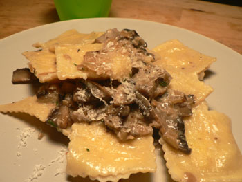
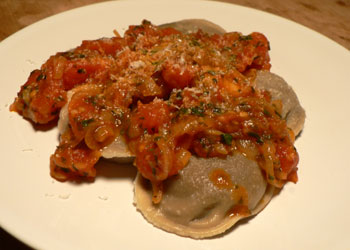

New York store-bought ravioli
I’ve been a ravioli junkie since even before reading Heat, always finding fresh ravioli to be an easy and inexpensive alternative to meat. If I had the time and know-how, I’d love to make my own ravioli, but I don’t see that happening in this apartment with my schedule anytime soon. Instead, I’ve been sampling the goods from different stores around town, and though there are still several I’d like to try, I have gotten through four contenders.
I first tried FreshDirect’s frozen ravioli, which Uncle Teddy and I used to eat all the time when I lived with him. They are easy, cheap, and perfectly acceptable in the frozen category. It’s not a bad thing to have in the freezer just in case, the way I keep frozen pierogies.
Next, in a moment of insanity, I spent an untold sum on the black truffle ravioli from Garden of Eden. While flavorful and quite truffley, these ravioli had an unpleasant sharpness. I would happily eat them anytime, but I wouldn’t buy them again. Here they were in a mushroom sauce:

I have posted before about the Whole Foods ravioli, which are on the cheaper end and perfectly fine to eat, if a little tangy. They have plenty of appealing flavors, including pumpkin, goat cheese, and lobster (expensive).
The winner, in a landslide, is the fresh ravioli from Murray’s Cheese on Bleecker Street. These are on the expensive side (between $8 and $10 for a dozen), but Bill Buford would describe them as floppy, and they are delicious. I tried the basil version first, on Friday. Sadly, a few of these broke while cooking. Happily, Murray’s offered me a new box, saying that my situation was atypical. The second box, which I picked up today, were stuffed with chopped mushrooms. Here they are under a sauce of caramelized onions, garlic, chopped tomatoes, and basil:

Both the basil and the mushroom varieties were excellent. I simmered them tonight for just four minutes, and they came out perfectly. If you feel like splurging on ravioli, Murray’s is the place to do it. After swimming all day and jogging in the evening, nothing could have been more appealing to me.
I still haven’t tried any of the fresh pasta at Di Palo downtown. Has anyone had these or ravioli from somewhere else that I shouldn’t miss?
Add a comment